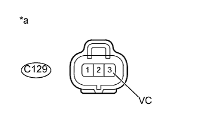

DTC P2454 Низкий уровень сигнала в цепи датчика давления сажевого фильтра "A" |
DTC P2455 Высокий уровень сигнала в цепи датчика давления сажевого фильтра "A" |
| Режим поездки при обнаружении DTC | Условие обнаружения DTC | Неисправный участок |
| Зажигание включено (IG) в течение 5 с | Выходное напряжение дифференциального датчика давления ниже 0,4 В в течение 3 с или более. (логика диагностирования за 1 поездку) |
|
| Режим поездки при обнаружении DTC | Условие обнаружения DTC | Неисправный участок |
| Зажигание включено (IG) в течение 5 с | Выходное напряжение дифференциального датчика давления выше 4,8 В в течение 3 с или более. (логика диагностирования за 1 поездку) |
|
| № DTC | Параметры из Data List |
| P2454 | Дифференциальное давление DPF |
| P2455 |
| Условие | Значение дифференциального давления | Состояние датчика |
| Зажигание включено (IG) | Приблизительно 0 кПа | Нормальное состояние |
| Всегда | Не более -5 кПа или выше 99 кПа | Обрыв или короткое замыкание |
| 4000 об/мин (двигатель работает без нагрузки) | Отрицательное значение | Неверное подсоединение шлангов |
| 1.ПРОВЕРЬТЕ ЖГУТ ПРОВОДОВ (ДИФФЕРЕНЦИАЛЬНЫЙ ДАТЧИК ДАВЛЕНИЯ В СБОРЕ – ECM) |
Отсоедините разъем дифференциального датчика давления.
Отсоедините разъем ЭБУ.
Измерьте сопротивление в соответствии со значениями, приведенными в таблице ниже.
| Контакты для подключения диагностического прибора | Состояние | Заданные условия |
| C129-2 (PEX) - C91-7 (PEX) | Всегда | Менее 1 Ом |
| C129-3 (VC) - C91-13 (VCPX) | Всегда | Менее 1 Ом |
| C129-1 (E2) - C91-14 (EPEX) | Всегда | Менее 1 Ом |
| Контакты для подключения диагностического прибора | Состояние | Заданные условия |
| C129-2 (PEX) или C91-7 (PEX) - масса | Всегда | 10 кОм или более |
| C129-3 (VC) или C91-13 (VCPX) - масса | Всегда | 10 кОм или более |
| C129-1 (E2) или C91-14 (EPEX) - масса | Всегда | 10 кОм или более |
Подсоедините разъем дифференциального датчика давления.
Подсоедините разъем ECM.
|
| ||||
| OK | |
| 2.ПРОВЕРЬТЕ НАПРЯЖЕНИЕ НА КОНТАКТЕ (VC) |
|  |
Отсоедините разъем дифференциального датчика давления.
Измерьте напряжение в соответствии со значениями, приведенными в таблице.
| Контакты для подключения диагностического прибора | Положение переключателя | Заданные условия |
| C129-3 (VC) - масса | Выключатель зажигания в состоянии ON (ВКЛ) (IG) | 4,5 - 5,5 В |
| *a | Вид спереди разъема со стороны жгута проводов: (к дифференциальному датчику давления в сборе) |
Подсоедините разъем дифференциального датчика давления.
|
| ||||
| OK | |
| 3.ЗАМЕНИТЕ ДИФФЕРЕНЦИАЛЬНЫЙ ДАТЧИК ДАВЛЕНИЯ В СБОРЕ |
Замените дифференциальный датчик давления в сборе (Нажмите здесь).
|
| ||||
| 4.ЗАМЕНИТЕ ECM |
Замените ECM (Нажмите здесь).
|
| ||||
| 5.ОТРЕМОНТИРУЙТЕ ИЛИ ЗАМЕНИТЕ ЖГУТ ПРОВОДОВ ИЛИ РАЗЪЕМ |
Отремонтируйте или замените жгут проводов или разъем.
| ДАЛЕЕ | |
| 6.ПРОВЕРЬТЕ, УСТРАНЕНА ЛИ ДОЛЖНЫМ ОБРАЗОМ НЕИСПРАВНОСТЬ |
Подсоедините портативный диагностический прибор к DLC3.
Сбросьте коды DTC (Нажмите здесь).
Включите зажигание (IG) и подождите 5 секунд.
Войдите в следующие меню: Powertrain / Engine and ECT / DTC.
Убедитесь, что DTC не выводится снова.
| ДАЛЕЕ | ||
| ||